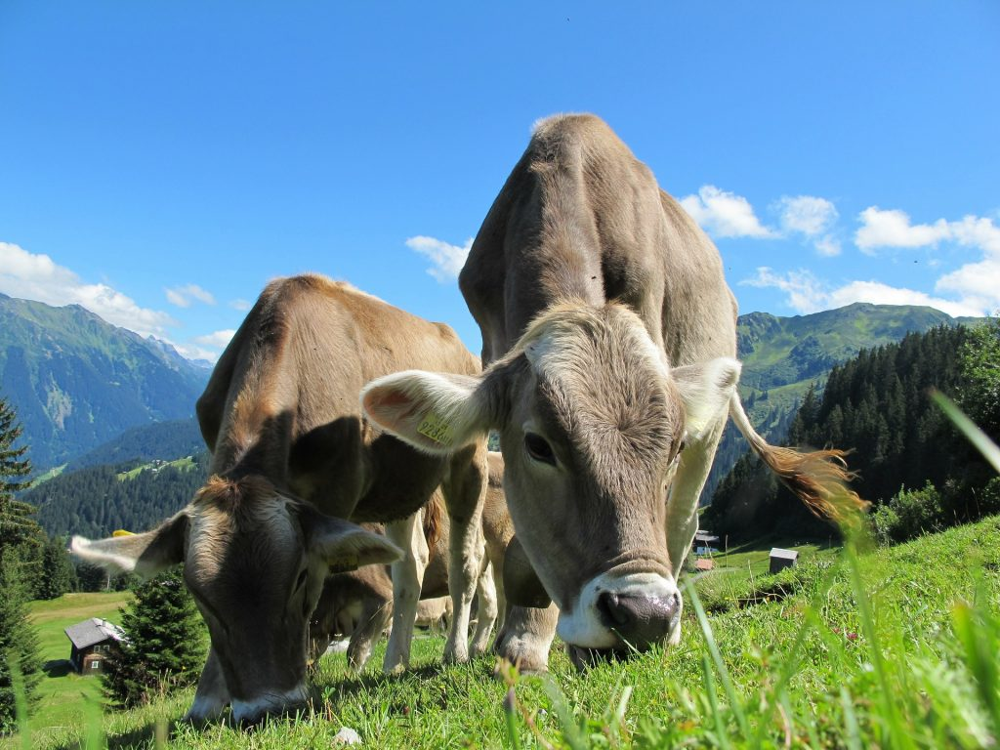
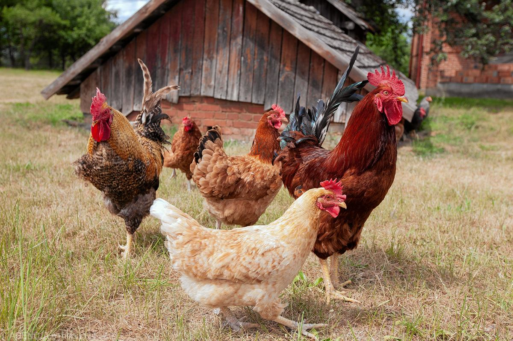
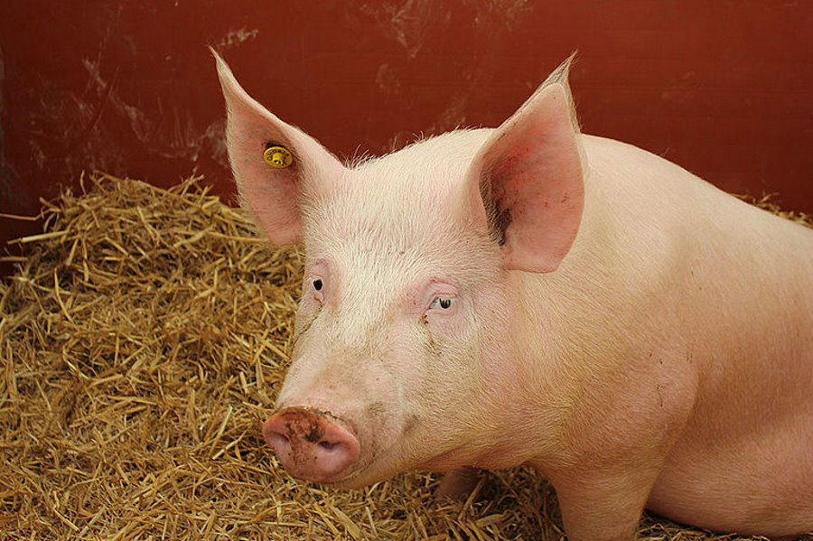
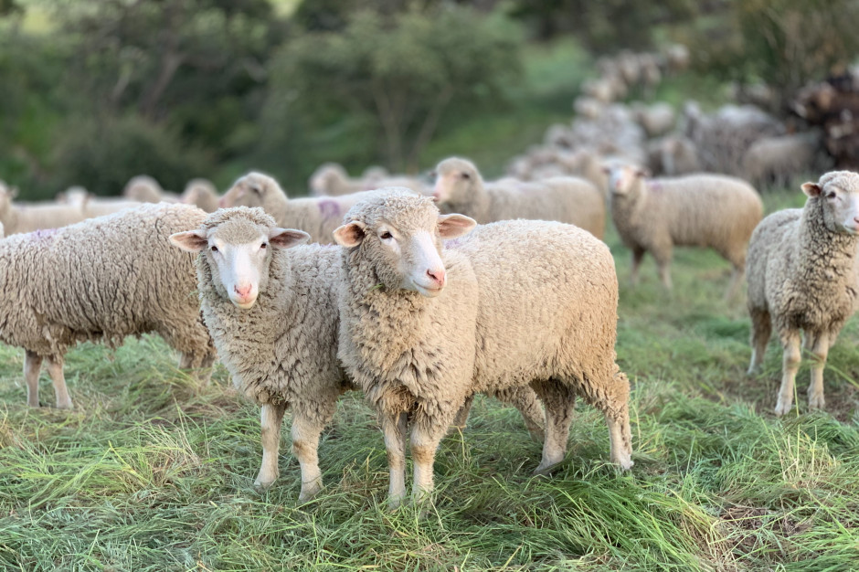
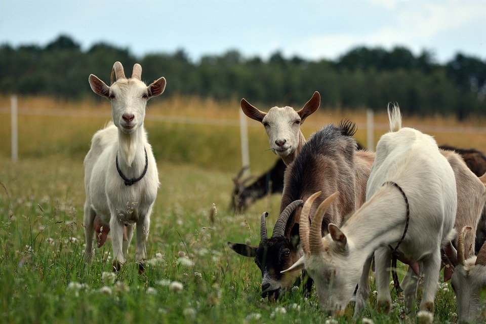

| Bydło | Zwane również rogacizną, składa się z wielu różnych ras. W Polsce często widuje się łaciate bydło rasy Holsztyno-Fryzyjskiej. Zwierzęta te hoduje się na mięso i mleko. |  |
| Drób | Udomowione ptaki hodowane ze względu na mięso, jaja, pióra, skóry (strusia skóra), nawóz. Do drobiu zalicza się między innymi kury, gęsi , indyki, kaczki, perlice, gołębie, utrzymywane w warunkach fermowych strusie afrykańskie, przepiórki japońskie |  |
| Świnie | Świnie tradycyjnie hodowane są na mięso. Wykorzystywane jest także ich tłuszcz – jako smalec. Wykorzystywana jest także skóra świńska do wyrobów galanteryjnych – głównie torebek Świnie pomagają także w odszukiwaniu trufli – cennych grzybów rosnących pod ziemią. |  |
| Owce | Owce to zwierzęta stadne karmione głównie trawą. Wykorzystuje się je przede wszystkim do produkcji wełny. Wykorzystuje się także baraninę – mięso owiec. Coraz popularniejsze jest także mleko owcze, z którego też produkuje się sery. |  |
| Kozy | Koza to jedno z najstarszych udomowionych zwierząt. Wykorzystuje się ją głównie w celu produkcji mięsa i mleka. Wykorzystywana jest także skóra kozia. Produkuje się z niej safian wykorzystywany do produkcji butów czy opraw książek. Ze skóry koźlej zaś produkuje się jedną z najlepszych wełen na świecie – kaszmir. |  |